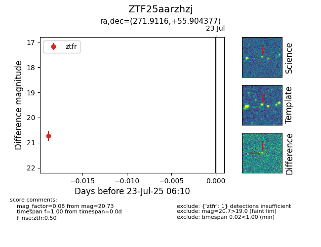

Target ZTF25aarzhzj at 2025-07-23 12:37, see:
FINK: fink-portal.org/ZTF25aarzhzj
Lasair: lasair-ztf.lsst.ac.uk/objects/ZTF25aarzhzj
ALeRCE: alerce.online/object/ZTF25aarzhzj
alt names
ZTF25aarzhzj (ztf,fink)
coordinates:
equatorial (ra, dec) = (271.9116,+55.90438)
galactic (l, b) = (84.2920,+28.18709)
photometry
last ztfr=20.73
1 ztfr detections
